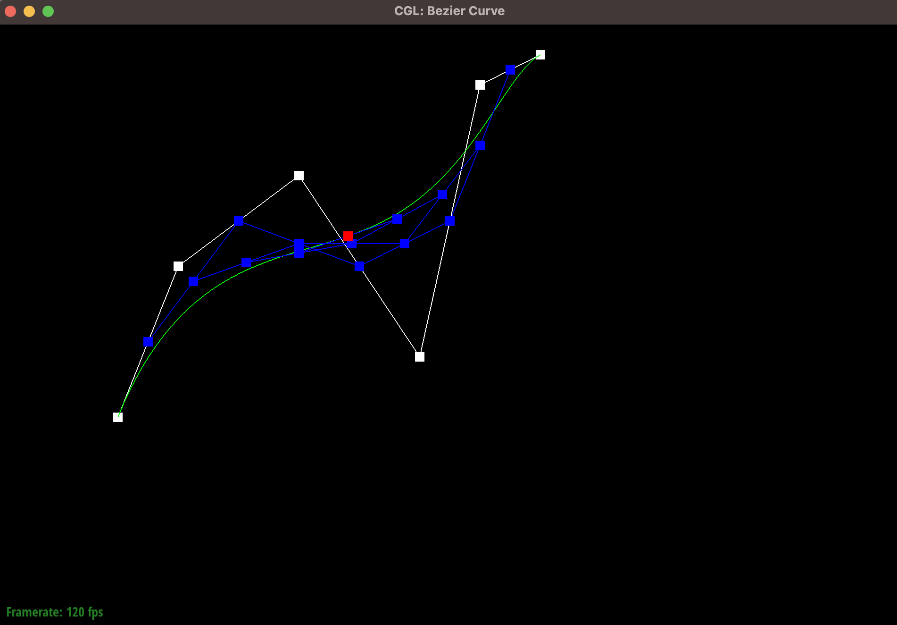
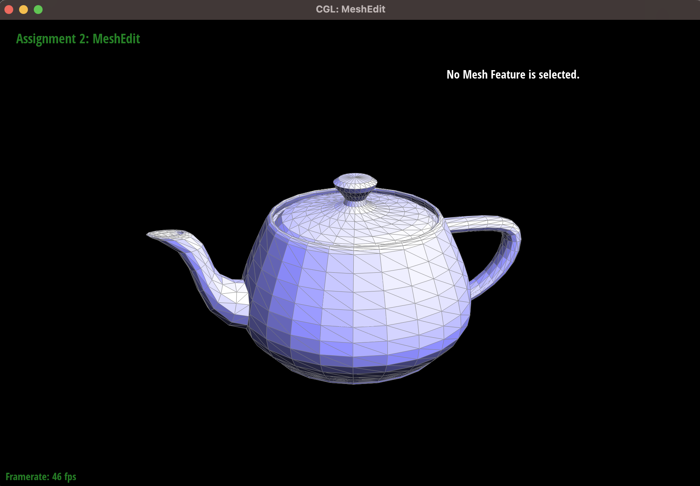
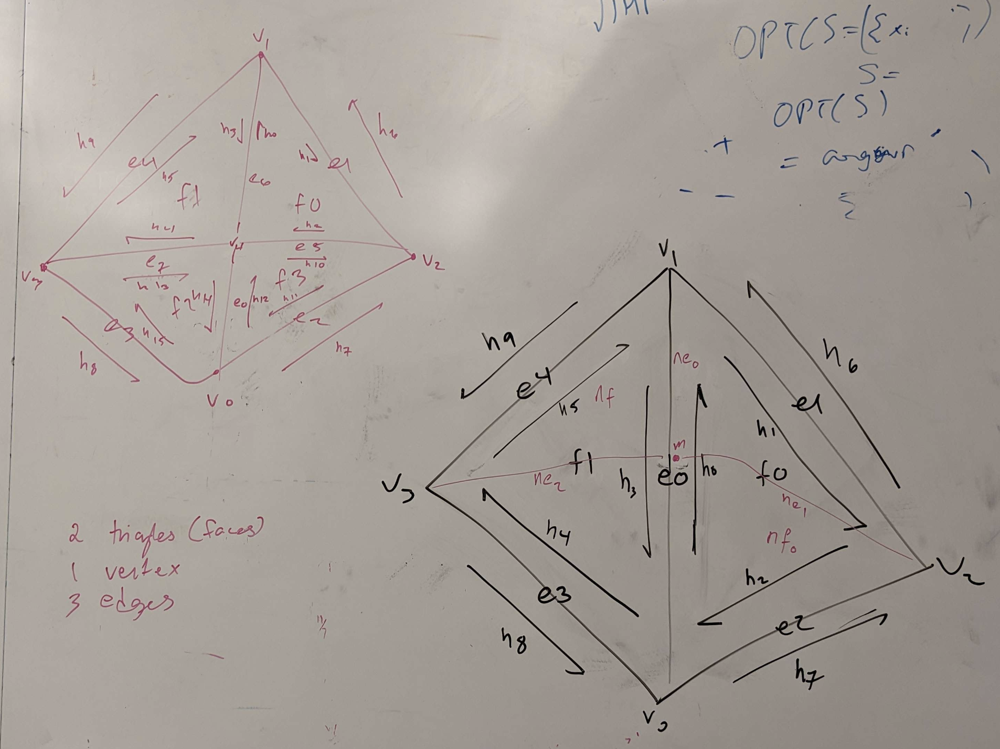

Overview
In this project, I wrote a handful of algorithms to handle mesh modeling. For the first section, I wrote de Casteljau's algorithm to evaluate Bezier curves, and then extended it to evaluate Bezier surfaces. In the second part, I used the half edge data structure to write efficient algorithms to compute area-weighted vertex normals and do flip & split operations on edges in the mesh.
Section I: Bezier Curves and Surfaces
Part 1: Bezier Curves with 1D de Casteljau Subdivision
Briefly explain de Casteljau's algorithm and how you implemented it in order to evaluate Bezier curves.
De Casteljau's algorithm is a recursive algorithm that allows us to evaluate Bezier curves on a paramter $t$. The algorithm works by being given $n$ initial control points and deriving $n - 1$ new points from them by doing linear interpolation between the points. We repeat this process on these $n-1$ points recursively until we are left with just one point. So, if we are given $n$ initial control points called $p_0, p_1, \ldots, p_n$, we the next set of points will be $p'_0, p'_1, \ldots, p'_{n-1}$ where the formulat for each $p'_i$ is given as $$p'_i = (1 - t) * p_i + t * p_{i+1}$$
I implemented this algorithm by having a for loop go through the valid range of $i$ values (that is, from $0$ to $n-1$, inclusive), and for each $i$ I appended to a list the $p'_i$ as computed above.
Take a look at the provided .bzc files and create your own Bezier curve with 6 control points of your choosing. Use this Bezier curve for your screenshots below.
I created a curve with the following points:
$$(0.200, 0.350), (0.300, 0.600), (0.500, 0.750), (0.700, 0.450), (0.800, 0.900), (0.900, 0.950)$$
Show screenshots of each step / level of the evaluation from the original control points down to the final evaluated point. Press E to step through. Toggle C to show the completed Bezier curve as well.
|
Level 0
|
Level 1
|
|
Level 2
|
Level 3
|
|
Level 4
|

Level 5 (with completed curve as well)
|
Show a screenshot of a slightly different Bezier curve by moving the original control points around and modifying the parameter \(t\) via mouse scrolling.
Here is a curve that was created by taking the previous curve and moving the control points and scrolling to change the $t$ parameter.
Part 2: Bezier Surfaces with Separable 1D de Casteljau
Briefly explain how de Casteljau algorithm extends to Bezier surfaces and how you implemented it in order to evaluate Bezier surfaces.
We extended the de Casteljau algorithm to Bezier surfaces by recognizing that the $n \times n$ matrix of points could be viewed as $n$ different Bezier curves. Thus, we could basically apply the de Casteljau algorithm from the previous part to this section to each of the rows in the Bezier surface. This would result in giving us $n$ points (one from each row), which we could then also view as another Bezier curve and apply the previous algorithm to this curve as well to end up with one final point.
Applying the extended de Casteljau required taking in two parameters, $u$ and $v$. $u$ was the parameter that was passed into the simple version of de Casteljau's algorithm when it was called on each of the rows. $v$ was the parameter that was passed into de Casteljau's algorithm when it was called on the output points from each row.
Show a screenshot of bez/teapot.bez (not .dae) evaluated by your implementation.
Here is a screenshot of the teapot .bez file being evaluated by my implementation.
Section II: Triangle Meshes and Half-Edge Data Structure
Part 3: Area-Weighted Vertex Normals
Briefly explain how you implemented the area-weighted vertex normals.
First, I created a new 3D Vector of all zeroes. Then, I took the half-edge of the current vertex and then got the face associated with that half edge. I then added the area-weighted normal of that face to the counter 3D Vector, using the normal() function. I then got the twin of the current half edge and got the face for that half edge. I repeated the process of adding that area-weighted normal of that face and getting the next twin. I did this in a loop until the next twin half edge was the original half edge, because this meant we had looped through all neighbouring triangles to this vertex. After the loop was finished, I then normalized the counting 3D Vector and returned that.
Show screenshots of dae/teapot.dae (not .bez) comparing teapot shading with and without vertex normals. Use Q to toggle default flat shading and Phong shading.
|

With flat shading
|
With Phong shading
|
Part 4: Edge Flip
Briefly explain how you implemented the edge flip operation and describe any interesting implementation / debugging tricks you have used.
In order to implement the edge flip operation, I found the following diagram that was posted on the Ed thread for this part to be particularly helpful in visualizing how to update all the pointers in the data structures.
From this diagram, I was able to pretty easily implement edge flips with needing much debugging.
To begin, if the current edge was a boundary edge, I returned immediately and just returned the given edge.
If it was a non-boundary edge, then I first created a variable for each half edge, edge, vertex, and face that was shown in the above diagram. Used various pointer chains to retrieve each of these variables. Once I had all the variables, I update the pointers for each one according to how the diagram looked after the flip. For each half edge, I called the setNeighbors function to easily update each half edge's associated next half edge, twin half edge, vertex, edge, and face. And for each edge, vertex, and face, I updated their half edge point to reflect the post-flip diagram. For this operation, there was no new created objects, so we just needed to update the existing objects. Finally, I returned the update edge.
Show screenshots of the teapot before and after some edge flips.
Here is a screenshot of the teapot after some flips have been applied to some of its edges.
|
(Before Flips)
|
(After Flips)
|
Write about your eventful debugging journey, if you have experienced one.
I don't think I had much of a debugging journey. After I used the visual to setup my implementation, I found that it was fairly smooth sailing from there.
Part 5: Edge Split
Briefly explain how you implemented the edge split operation and describe any interesting implementation / debugging tricks you have used.
In order to implement the edge flip operation, I found the following diagram that was posted on the Ed thread for this part to be particularly helpful in visualizing how to update all the pointers in the data structures.

For my algorithm, just like in the previous part, if the edge given was a boundary edge, I returned early. Otherwise, I collected variables for each of the objects that were present in the initial diagram above. What is different from the last part is that I also created new objects for the new edges, faces, half edges, and vertex that are needed to complete the split operation. Finally, I set all the pointers for each of the existing and new objects. For the half edges, I used the setNeighbors method and for all the other objects I set their half edge pointer appropriately. Finally, I set the position of the new middle vertex to be the midpoint of the given edge by averaging the positions of the two vertices of that edge.
Show screenshots of a mesh before and after some edge splits.
Here is a screenshot of the teapot after some splits have been applied to some of its edges.
|
(Before Some Splits)
|
(After Some Splits)
|
Show screenshots of a mesh before and after a combination of both edge splits and edge flips.
Here is a screenshot of the teapot after some combination of flips and splits have been applied to some of its edges.
|
(Before Some Flips and Splits)
|
(After Some Flips and Splits)
|
Write about your eventful debugging journey, if you have experienced one.
I did not experience a debugging journey for this question. The process was very similar to that last part and I found that it didn't require much new stuff, apart from creating a couple of new objects.
If you have implemented support for boundary edges, show screenshots of your implementation properly handling split operations on boundary edges.
Not applicable.
Part 6: Loop Subdivision for Mesh Upsampling
Briefly explain how you implemented the loop subdivision and describe any interesting implementation / debugging tricks you have used.
Was not able to successfully implement this part.
Take some notes, as well as some screenshots, of your observations on how meshes behave after loop subdivision. What happens to sharp corners and edges? Can you reduce this effect by pre-splitting some edges?
Was not able to successfully implement this part.
Load dae/cube.dae. Perform several iterations of loop subdivision on the cube. Notice that the cube becomes slightly asymmetric after repeated subdivisions. Can you pre-process the cube with edge flips and splits so that the cube subdivides symmetrically? Document these effects and explain why they occur. Also explain how your pre-processing helps alleviate the effects.
Was not able to successfully implement this part.
If you have implemented any extra credit extensions, explain what you did and document how they work with screenshots.
Not applicable.
Part 7 (Optional, Possible Extra Credit)
Save your best polygon mesh as partsevenmodel.dae in your docs folder and show us a screenshot of the mesh in your write-up.
Not applicable.
Include a series of screenshots showing your original mesh and your mesh after one and two rounds of subdivision. If you have used custom shaders, include screenshots of your mesh with those shaders applied as well.
Not applicable.
Describe what you have done to enhance your mesh beyond the simple humanoid mesh described in the tutorial.
Not applicable.